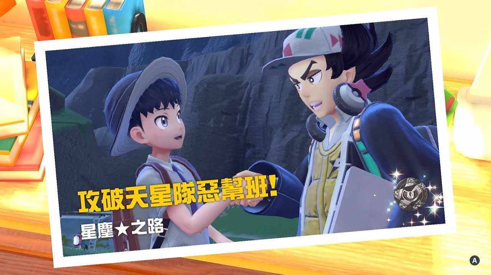
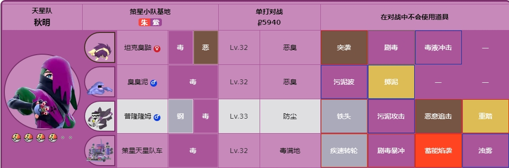

惡幫班
前往位於西第1區的惡幫班基地，挑戰閣道二小隊的老大皮拿。 在準備對抗天星隊時校長也會為了調查天星隊的真相幫助我們，不過此時他會堅持自己叫做聶凱。 在進入基地前天星隊的手下會前來阻撓，該天星隊成員會派出惡和飛行屬性的黑暗鴉進行戰鬥，將其擊敗即可。 隨後敲響基地大門上的鈴鐺正式開始挑戰天星隊，在該戰鬥中僅能夠使用攜帶的前三隻寶可夢，因此在戰鬥前要主要先調整至最佳順序。 在進攻惡幫班時建議使用格鬥、蟲和妖精屬性的寶可夢。 在天星隊基地中按下R鍵將寶可夢派出，在規定時間內擊敗30只天星隊寶可夢即可。 當寶可夢生命值較低時可以通過基地中的飲料機恢復。 將天星隊的寶可夢擊敗後與惡幫班老大皮拿戰鬥，皮拿的第一隻寶可夢是21級的駒刀小兵。該寶可夢的屬性為惡和鋼，4倍弱格鬥系寶可夢。 將第一隻寶可夢擊敗後需要再次擊敗閣道二天星隊車，該騎車的等級為20級，繼續使用格鬥系將其擊敗即可。 將皮拿擊敗後他表示自己會退出天星隊，並將惡幫班的團隊徽章送給我們。 


火幫班
前往東第一區挑戰天星隊的火幫班，該基地中的寶可夢均為火屬性，建議使用水、地面或岩石屬性的寶可夢進行挑戰。 火幫班基地看守大門的成員會派出25級的戴魯比與我們進行戰鬥。 就在準備進入火幫班基地時，聶凱和一個名為炭次郎的寶可夢出現，隨後聶凱會前去調查炭次郎，由我們自己先行前往火幫班基地。 將寶可夢調整完畢後敲響大門上的鈴鐺正式開始挑戰。 此處同樣需要我們在10分鐘內擊敗30只天星隊的寶可夢。 梅洛可得第一隻寶可夢是27級的煤炭龜。 將煤炭龜擊敗後再次與王良四天星隊車戰鬥並將其擊敗即可戰勝火幫班。 戰勝梅洛可後獲得火幫班徽章。
毒幫班
毒幫班的基地位於東西3區的印記樹林中，該首領建議使用地面或超能力屬性的寶可夢進行挑戰。 在毒幫班基地前我們會被一個自稱秋明同胞的學生攔住去路，隨後進入寶可夢對戰。 該敵人的第一隻寶可夢為30級的溶食獸。 第二隻寶可夢為31級的滋汁鼴，將兩隻寶可夢全部擊敗後即可敲響鈴鐺挑戰基地。 在10分鐘內擊敗30只天星隊的寶可夢。 戰勝天星隊手下後與秋明戰鬥，他的第一隻寶可夢為32級的坦克臭鼬。 第二隻寶可夢為33級的普隆隆姆。 第三只寶可夢為32級的臭臭泥。 最後擊敗策星天星隊車即可擊敗秋明。  擊敗秋明後獲得毒幫班的團隊徽章。
妖精幫班
妖精幫班基地位於地圖最北部區域，首領奧爾迪加的寶可夢等級為51級，建議使用毒或鋼屬性的寶可夢進行挑戰。 在基地大門前我們見到了一個自稱奧爾迪加管家的男人，隨後和其進入寶可夢對戰。 該對手的第一隻寶可夢為詐唬魔。 第二隻寶可夢為提布莉姆，將兩隻寶可夢擊敗後即可正式開始挑戰妖精幫班。 在營地中按R鍵召喚出寶可夢，累計擊敗30只天星隊成員的寶可夢即可挑戰奧爾迪加。 奧爾迪加的第一隻寶可夢為瑪力露麗。 第二隻寶可夢為麻花犬。 奧爾迪加的第三只寶可夢胖可丁。 最後擊敗閣道三天星隊車即可戰勝奧爾迪加。 獲得天星隊徽章。
格鬥幫班
接下來我們要挑戰最後一個幫班，該幫班基地位於北第一區東側。格鬥幫班首領枇琶的寶可夢為格鬥屬性，等級在56級左右，建議使用飛行、超能力或妖精屬性的寶可夢挑戰。 來到幫班基地後，在大門前與天星隊成員對戰，第一隻寶可夢為不良蛙。 第二隻寶可夢為火爆猴。 累計擊敗30只天星隊寶可夢後挑戰格鬥幫班首領枇琶。 枇琶的第一隻寶可夢為毒骷蛙，該寶可夢的屬性為毒和格鬥。 第二隻寶可夢是路卡利歐，該寶可夢屬性為鋼和格鬥。 第三只寶可夢為格鬥屬性的投擲猴。 第四只寶可夢為幽靈和格鬥屬性的棄世猴。 最後擊敗王良一天星隊車即可徹底戰勝枇琶 獲得格鬥幫班徽章。 至此所有的天星隊成員已經全部擊敗﹐星辰之路完成。